Here is what the final level of Portal 2 looks like in Hammer.
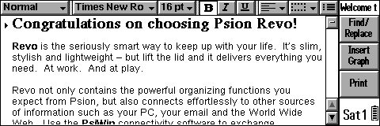

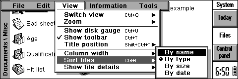

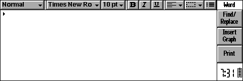
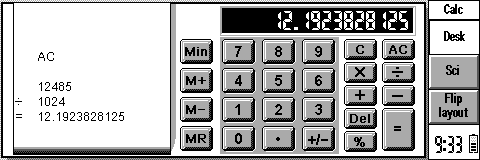


Here is what the final level of Portal 2 looks like in Hammer.
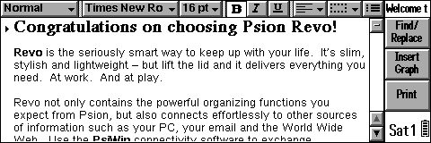
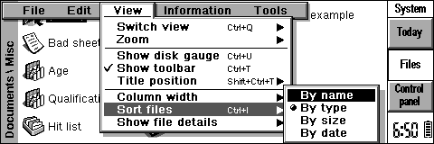
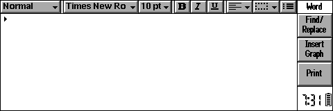
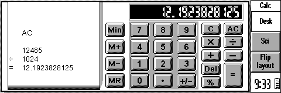


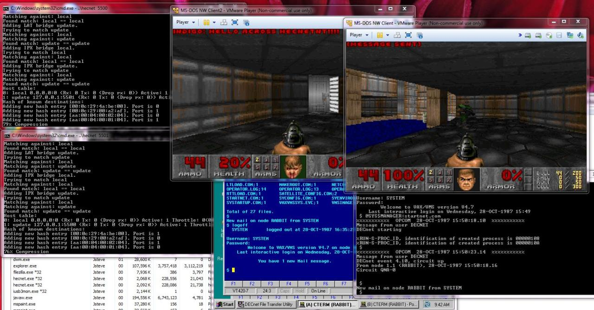

Quake1 with WATTCP built with DJGPP on DOSBox on XP


I feel like such a showoff, haha.
THE DREAM IS REAL! I now have my very own Logic Analyzer! Looks like building a 6502 computer may be easier than I thought!

Buick Reatta - Used a CRT touch screen for cabin controls/diagnostics.
A few other Buicks had these touch screens, but the Reatta was the only one that looked cool.

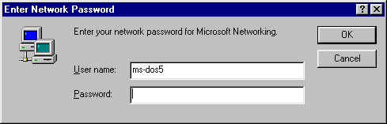
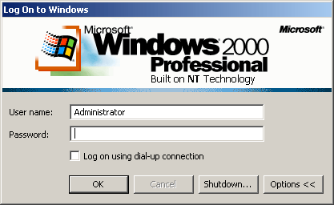